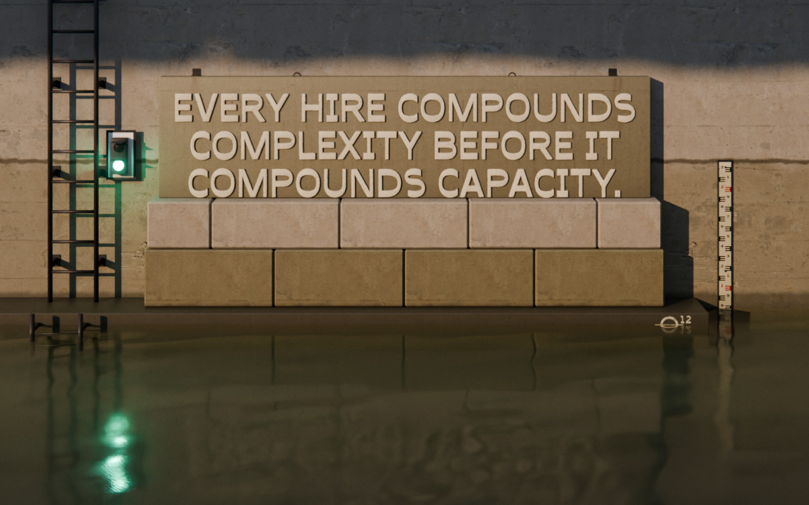

Scaling Up‑Side‑Down
The book
SUSD Bootloader
Get it free
complexity
margin
12 people: the load line
Real scaling is cyclical.
Cycle 3 of 3
Up
Up for growth.
Revenue expands, reach grows, capacity stretches
Side
Side for stability.
Down
Down for pruning.
Nothing moves forward until the cycle completes. But when it does, the next cycle starts higher.